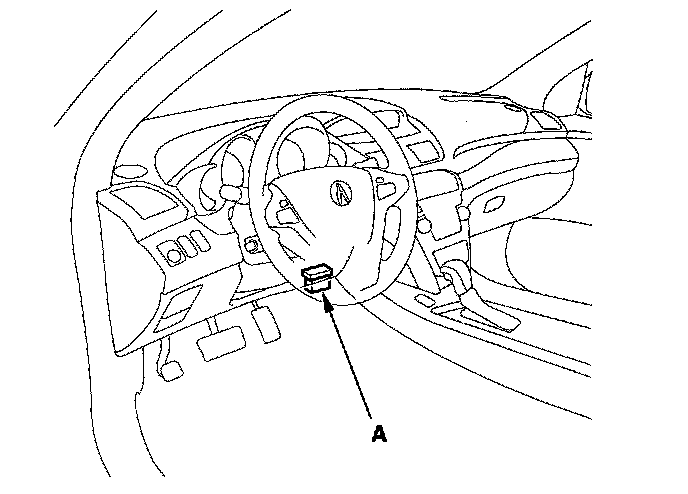

Reading and Clearing Diagnostic Trouble Codes
How to Check for Diagnostic Trouble Codes (DTCs)When the SH-AWD control unit senses an abnormality in the input or output systems, the SH-AWD indicator in the gauge assembly will usually come on, and the malfunction indicator lamp (MIL) the D5 indicator, and/or the ABS indicator may also come on.
1. With the ignition switch OFF, connect the HDS to the data link connector (DLC) (A) behind the driver's dashboard lower cover.

2. Turn the ignition switch ON (II) and follow the prompts on the HDS to display the DTC(s) on the screen. After determining the DTC(s) refer to the DTC Troubleshooting. Diagnostic Trouble Code Descriptions
NOTE: See the HDS help menu for specific instruction.
3. If there are fuel and emission DTCs, A/T DTCs, and VSA system DTC's at the same time, troubleshoot the fuel and emission DTCs first.
4. After recording the DTCs, clear all DTCs.
5. Test-drive the vehicle for several minutes in AWD mode, and check for DTCs. If the DTC returns, refer to the DTC Troubleshooting. Diagnostic Trouble Code Descriptions If the DTC does not return, there was an intermittent problem within the circuit. Make sure all connectors and terminals in the circuit are tight.